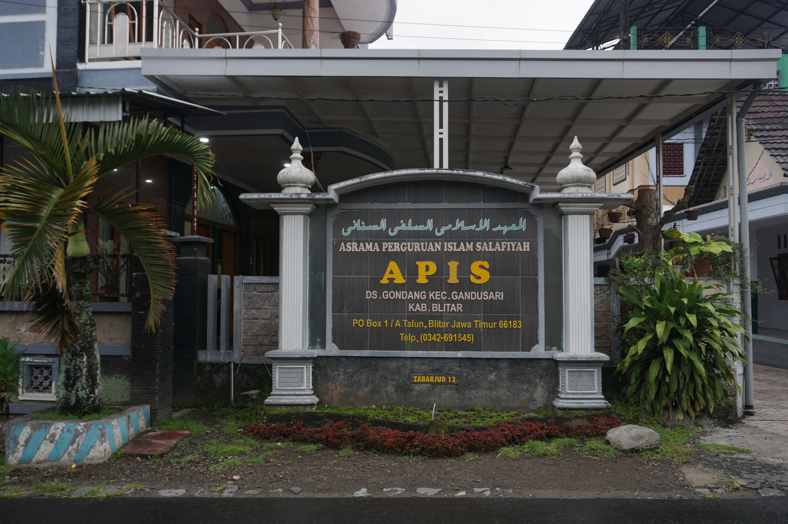

Berilmu Kaffah Berakhlak Karimah, Siap Menjadi Generasi Rabbani yang Berkontribusi untuk Umat dan Bangsa
Scroll untuk melihat lebih banyak

Pondok Pesantren "APIS SANAN GONDANG" adalah lembaga pendidikan Islam berbasis salaf yang didirikan oleh Maha Guru Muhammad Djamhuri, yang terkenal dengan nama KH. SHODIQ DAMANHURI atau juga KYAI SANAN, Pada tahun 1932M Hadrotus Syaikh mendirikan Pesantren di Desa Gondang Kec. Gandusari Kab. Blitar yang terletak 18 km dari kota Blitar. Setelah beberapa tahun, perkembangan pesantren APIS Sanan Gondang menjadi sangat pesat. Para santri dari berbagai penjuru daerah telai mulai berdatangan untuk menimba ilmu. Sistem pengajaran yang sebelumnya hanya berbentuk bandongan atau weton dengan sejumlah kitab kuning, untuk tahap selanjutnya telah mulai menerapkan sistem madrasah. Selanjutnya pesantren APIS Sanan Gondang terus mengadakan perbaikan dalam hal sistem pendidikan guna menggali warisan keilmuan dari para ulama salaf.
Kami menyediakan pendidikan terintegrasi Baik Non-Formal (Salaf) maupun Formal
Pendidikan dasar untuk santri awam dan belum memiliki bekal keilmuan yang cukup.
Jenjang dimana santri sudah serius dalam memahami ilmu mulai Alat, Fiqih, dan Aqidah.
Jenjang dimana santri memahami Ilmu Alat, Fiqih, dan Aqidah secara Lanjut dan siap untuk terjun ke Masayarakat (PKL).
Setara SMA
Setara SMP
Setara MI
Program hafalan 30 juz dengan metode mutqin dan sanad (Khusus Santri Putri).
Mulai dari Alat, Fiqih, Aqidah, dll.
Diskusi Fiqih Ilmiyah / Bahtsul Masa'il bagi santri 'Aliyah.
Ihya' 'Ulumuddin, Shohih Muslim, Al - Hikam, Sirojut Tholibin, dan Kitab Klasik Lainnya.
Tidak boleh diantar oleh pacar / yang bukan mahrom / selain wali
2 Lembar
Yang disediakan oleh panitia
Dilakukan ketika saat di Kantor Pendaftaran
Sesuai Tingkatan yang akan dimasuki
Yang berlaku di Pondok Pesantren
Jl. Desa Gondang No.28,
Gondang, Kec. Gandusari, Kabupaten Blitar, Jawa Timur 66187
+62 857-3610-6444
Admin Pendaftaran
PONDOK SANAN
Instagram - Youtube - Tiktok - Facebook